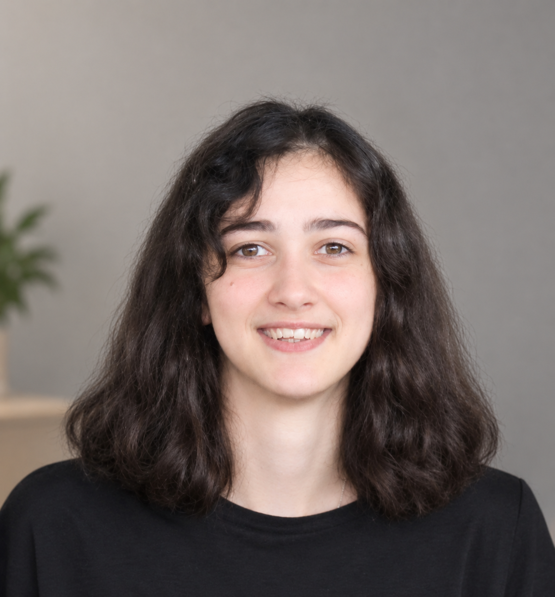

Projets
projets, du plus récent au plus ancien.

Portfolio
Élève-ingénieure en informatique à l'EPITA. Projets en 3D, développement web, back-end, systèmes et jeux vidéo.
projets, du plus récent au plus ancien.
Élève-ingénieure en dernière année à l'EPITA (majeure MTI, promotion 2027). Après un stage en développement full-stack dans le numérique en santé, je m'oriente vers le développement logiciel, avec un goût marqué pour la 3D et les projets techniques. Fondatrice du club gaming de mon école. Anglais TOEIC 925. Basée à Paris.